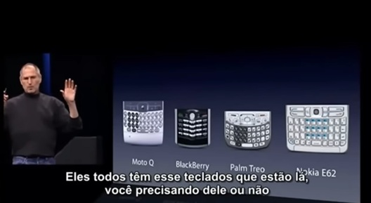
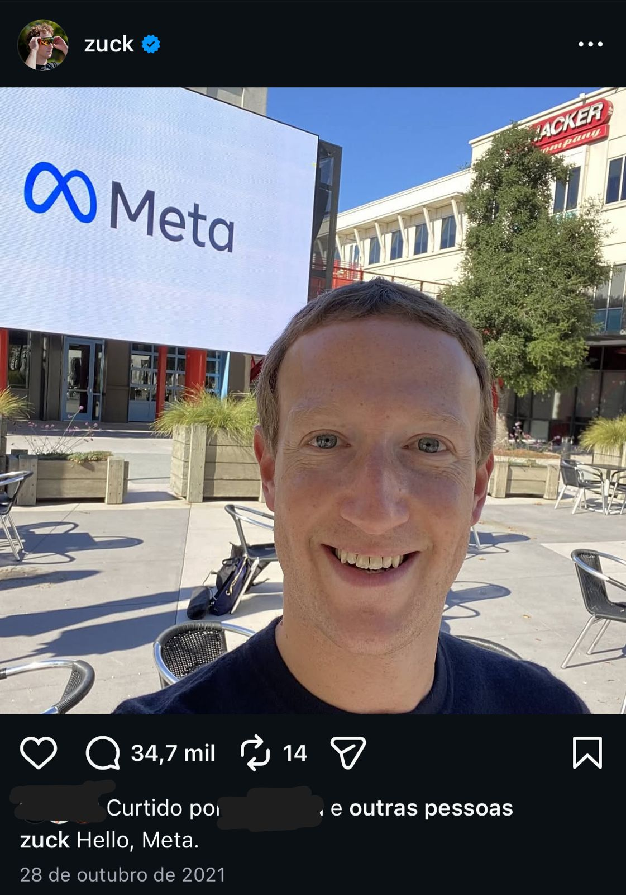

Esses dias abri o Instagram – sem nenhum propósito para além desse mesmo – e o primeiro post era: "Meta e Google são condenados por vício em redes sociais". Li o resumo da notícia na legenda (ou será que já podemos chamar a legenda dos posts de notícias de "a notícia", simplesmente?)
Logo alguns posts abaixo, fragmentos do novo documentário A anatomia do post. Em seguida, pessoas comentando sobre ele.
E logo depois, posts de pessoas comentando sobre a "condenação" de Meta e Google.
O algoritmo não é bobo, né? Tampouco orgulhoso; seu funcionamento é de outra ordem. Ele bem sabe que conteúdo sobre as consequências do uso das redes sociais me faz passar mais tempo nas redes sociais.
E, ainda com o feed aberto rodando algum reels do qual nem me lembro mais – como é com a maioria deles – me faço a seguinte pergunta: como foi que chegamos até aqui?
Ainda ecoando o silêncio que essa pergunta me causou, me percebi sentada no sofá, curvada, olhando para baixo, segurando meu iPhone, e pensei que talvez a resposta estivesse, ao mesmo tempo, debaixo do meu nariz e na palma da minha mão.
Lembrei da pesquisa de Haidt sobre a ascendência de sofrimentos psíquicos desde o lançamento do primeiro iPhone. Abandonei o meu no sofá e fui para a tela de resolver assuntos sérios – a do computador – para procurar no YouTube (tal como aprendi quando ainda era uma novidade): abre o Google, digita "youtube", abre o YouTube, digita na barra de pesquisa "lançamento primeiro iphone", enter. E logo um dos primeiros vídeos era algo como: "steve jobs", "apresentação completa", "legendada". A frase que aparece de capa: "Hoje a Apple reinventa o smartphone".
Pronto. (Quase) nunca falha.
Comecei a assistir – agora projetando na tela da televisão, pois, como tinha mais de uma hora, assistir no computador sem começar a abrir outras abas para resolver outras coisas ao mesmo tempo seria um grande desafio. Ainda corria o risco de pegar o celular algumas vezes enquanto assistia à TV; por isso, peguei-o do sofá e o levei para outro cômodo – apesar da vontade de tirar uma foto da TV para postar nos stories o que eu estava assistindo ou para mandar para alguém.
Depois que consegui me distrair da distração fundamental do cotidiano, comecei a escutar.
Steve Jobs começa dizendo que os smartphones da época (estilo Blackberry) eram muito precários e difíceis de usar. Eu, que nunca tive um desses, mas que via meus personagens favoritos com eles, senti uma forte nostalgia vendo-os ali, depois de tanto tempo.
Agora, veja como ele nos explica o que está de errado com eles:

E aqui, como ele começa a apresentar a solução para os nossos problemas – que ele estava justamente nos explicando quais eram – através de um "gráfico básico de ensino fundamental": de um lado, o eixo entre hard to use e easy to use; do outro, entre not so smart e smart. Os celulares comuns, no canto "não tão inteligente". Os smartphones da época, inteligentes mas difíceis de usar. E o iPhone, sozinho, no canto oposto a todos eles.
Tudo fica mais fácil de entender: celulares comuns não são inteligentes; os smartphones (inteligentes) são extremamente limitados, pois são difíceis de usar; já o iPhone... bom, é o iPhone.
A ideia foi juntar três em um: o iPod, o celular e a internet (browser). Porém não de qualquer jeito. Do jeito mais sofisticado de que foi capaz na época, apresentando ao mundo sua mais recente invenção: a tela multi-touch (que, na verdade, existir-existir, já existia há um tempo — mas, veja bem, ainda não havia sido incorporada à Apple e nem otimizada).
Não o polegar — tão celebrado como marca da nossa superioridade evolutiva —, mas o indicador!
Enfim: agora, abandonando os botões pré-históricos, usaremos o melhor "pointing device" do mundo: nosso dedo indicador.
"Nós inventamos uma nova tecnologia chamada multi-touch, que é fenomenal. Funciona feito mágica!", é o que ele diz logo antes de apresentar o gesto que revolucionaria ainda mais nossa relação com o celular: o scrolling. Seguido de aplausos, ele conta que, ao demonstrar todos os novos artefatos do iPhone para um amigo, teve o seguinte feedback: "você me conquistou no scrolling".
E, "feito mágica", nos vemos aqui, quase 20 anos depois, profundamente conquistados pelo scrolar das telas. Por esse gesto – desenvolvido pela Apple e mais tarde tornado algo sem fim pelas redes sociais (Facebook, Instagram, YouTube...) – que nos permite deslizar infinitamente pelas coisas do mundo — tal como o algoritmo as entrega especialmente ✨Para Você✨
Basta voltarmos à cena inicial deste texto: um feed, na tela do smartphone, capacidade infinita de scrolling, nas mãos de alguém que direciona um olhar para essa tela-de-luz-azul em busca de saber o que ela tem para lhe dizer. Em busca de notícias, de memes, de posts da vida pessoal de alguém que nem conhece, de vasculhar a vida de alguém que conhece, de informações, de respostas, de perguntas. Ou, simplesmente, em busca de mais nada.
Estamos conquistados, enfeitiçados, pelo gesto de rolar o mundo. Direcionamos um olhar para a tela à procura do que ela tem a dizer sobre o mundo, sobre o outro e, assim, sobre o Eu.
"Como o outro me vê?", deve ser a pergunta que acontece diante do smartphone. E não apenas quando abrimos a nossa câmera frontal — desde que ela passou a fazer parte das nossas vidas com o iPhone 4, em 2010, trazendo com ela uma reestruturação das redes sociais que passam, então, a girar em torno do mesmo sol: a imagem de quem parecemos ser projetada na tela.
Vamos falar mais sobre isso... but first... let me take a selfie!

A nossa própria imagem, na tela do smartphone, na ponta dos dedos, tornou-se cotidiana. Podemos editá-la, filtrá-la, recortá-la — de acordo com o que (ou o quanto) imaginamos que os outros querem ver, isto é, curtir, comentar, compartilhar.
De fato, ele acertou quando disse, com toda segurança, que a Apple reinventou o smartphone, o mercado e, enfim, a vida.
Quase 20 anos depois, voltamos ao vídeo — no YouTube, claro — e encontramos ali ecos de como estamos nos constituindo hoje. O scrolling e/no smartphone é parte da linguagem contemporânea, parte desse Outro a quem o sujeito é referido, superfície da qual ouvimos um reflexo digital que rola — como Jobs projetou — o tempo todo, infinitamente, como outros depois dele projetaram.